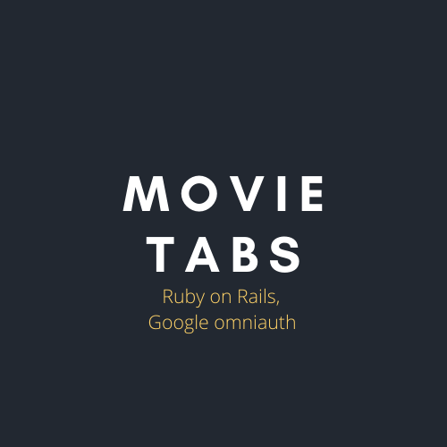

Flatiron Project #3
This was built using Ruby on Rails, Models, Views, Controllers (MVC), validations,ActiveRecord, ActiveRecord scope methods, ActiveRecord Query methods, Google omniauth, RESTful URLs.
A user can sign up and/or log in, log out. They can also log in with Google. Post movies, search through the movies that others have posted, post reviews, view their own and others reviews, as well as edit and update their own reviews.
As a movie viewer, I thoroughly enjoy visiting IMDB before watching a movie to check reviews and ratings. So, I wanted to create this site with IMDB as inspiration. Here, a user is able to post the movies they've watched as well as add any review about the movie so that another user can use that information to decide whether they want to spend their precious time watching it or not.